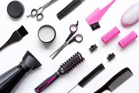

bem-vindo ao mundo do salão
É um espaço comercial dedicado ao embelezamento e bem-estar pessoal, oferecendo serviços de estética facial, corporal e capilar para homens, mulheres e crianças. É um mercado vibrante e resiliente, que busca cada vez mais proporcionar uma experiência única aos clientes através do bom atendimento, da inovação nos serviços e da criação de um ambiente acolhedor e confortável.
Por que aprender sobre o salão de beleza?
- Desenvolver habilidades profissionais na área da beleza
- Atender melhor os clientes com técnicas modernas
- Trabalhar com autoestima e bem-estar das pessoas
Recomendados
Curso para fazer maquiagem
O produto na imagem é o Batom Cremoso Intense By Amor 3,8g, uma colaboração de maquiagem do Boticário com a marca Paçoca Amor da Arcor.
saiba maisfotos que atrai mas Clientes
Uma caixa ou gaveta organizada com uma variedade de produtos de maquilhagem, incluindo paletas de sombras, batons, pincéis e bases.
saiba mais
fotos que atrai mas Clientes
Uma paleta de maquiagem, para quem não conhece é um estojo repleto de maquiagens com cores e texturas diferentes. É possível encontrar em lojas do ramo e em supermercados paleta de maquiagem só com sombras, batons, blushs, pó, corretivos, dentre outros.
saiba mais